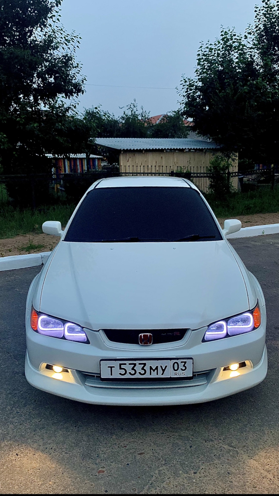
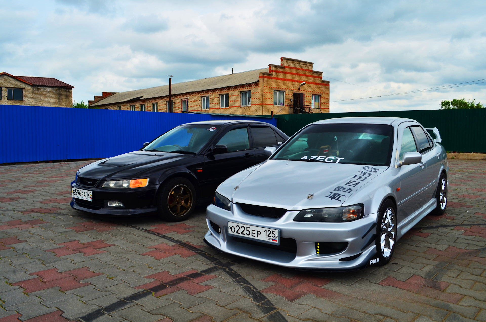
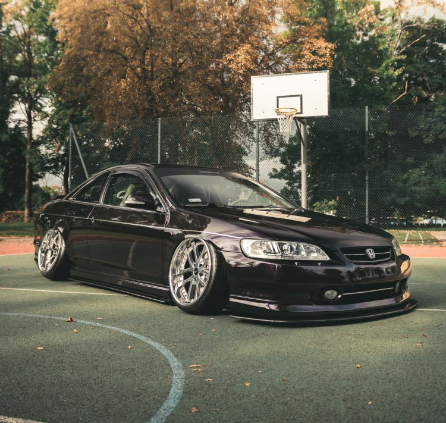

Философия: Единый мировой автомобиль
В 1997 году Honda совершила смелый шаг, впервые создав
единую глобальную платформу для Accord. Теперь один и тот же автомобиль (с минимальными изменениями) продавался в Японии, Северной Америке и Европе. Это поколение (кузов
CF для седана и
CL для купе) сделало акцент на
повышенный комфорт, безопасность и статусность, не забывая о спортивных корнях. Accord окончательно перешел в бизнес-класс, став серьезным конкурентом для европейских марок.
Дизайн и конструкция: Европейская элегантность
Дизайн, созданный в европейском отделении Honda в Германии, отличался сдержанной, элегантной красотой. Исчезли вычурные формы пятого поколения, им на смену пришли четкие, выразительные линии, короткие свесы и стремительный профиль. Автомобиль выглядел
солидно, дорого и динамично.
- В модельном ряду остались 4-дверный седан и 2-дверное купе (для рынка США).
- Конструктивной основой стала переднеприводная платформа с независимой подвеской: спереди — стойки McPherson, сзади — многорычажная схема (Double Wishbone осталась в прошлом, кроме некоторых версий).
- Кузов стал значительно жестче на кручение, что улучшило управляемость и акустический комфорт.
Техническая основа: Эволюция надежности
Под капотом предлагался тщательно выверенный ряд силовых агрегатов:
- F23A (2.3 л SOHC VTEC, 150-155 л.с.): Новый базовый мотор для мирового рынка, наследник легендарной серии F. Отличался образцовой надежностью, тягой на низких оборотах и умеренным аппетитом.
- H22A (2.2 л DOHC VTEC, 190-220 л.с.): Легендарный высокооборотный мотор для спортивных комплектаций. В этом поколении он получил усовершенствования и ставился как на седаны, так и на купе.
- J30A (3.0 л V6 SOHC VTEC, 200-240 л.с.): Впервые в истории Accord предлагался с 6-цилиндровым V-образным двигателем в качестве топовой опции. Это обеспечивало феноменально плавную и тихую работу, а также уверенную тягу.
Трансмиссии: 5-ступенчатая «механика», 4-ступенчатый «автомат», а для V6 — усовершенствованный 5-ступенчатый «автомат».
Рынки и уникальные модификации
Американский и европейский Accord внешне почти не отличались. Для США ключевыми были мощные
V6 и комфорт. В Европе и Японии больше ценились спортивные
4-цилиндровые версии с VTEC. Также существовала
гибридная версия для японского рынка (первый гибридный Accord).


Фейслифт 1999 года и новые решения
В 1999 году Accord пережил серьезный рестайлинг. Изменения затронули:
- Экстерьер: Новая, более выразительная оптика (часто с прозрачными рассеивателями), иные бамперы и решетка радиатора.
- Интерьер: Более качественные материалы, новая приборная панель, мультируль (в топовых комплектациях).
- Безопасность: Появление системы стабилизации VSA (аналог ESP), улучшение пассивной безопасности.
Спортивные и люксовые комплектации
- Accord Type V (Япония): Особая версия с уникальным спортивным обвесом, подвеской и интерьером, часто с мотором H22A.
- Accord Euro R (CL1, 1998-2002): Абсолютная икона! На базе кузова купе/седана для японского рынка. Установлен форсированный двигатель H22A (220-220 л.с.), 5-ступенчатая КПП с близкими передаточными числами, винтовая подвеска, редуктор повышенного трения (LSD), кевларовые сиденья Recaro. Это был готовый спортивный автомобиль с завода.
- Комплектации V6: Уровень оснащения этих версий (кожа, климат-контроль, люк) всерьез конкурировал с премиальными брендами.
Феномен последнего «простого» Accord
Это поколение часто называют
«последним по-настоящему надежным и простым Accord». Оно балансировало на грани: уже не «железный» аскет пятого поколения, но еще не перегруженный сложной электроникой последующих. Его
механическая часть (особенно двигатели F23A и H22A) оставалась образцом надежности и ремонтопригодности.
Плюсы и минусы владения сегодня
Плюсы:
- Идеальный баланс комфорта, управляемости и надежности. «Золотая середина».
- Высокий запас прочности силовых агрегатов (особенно атмосферных F23A и J30A).
- Солидный и нестареющий дизайн, который до сих пор выглядит актуально.
- Наличие культовых спортивных версий (Euro R) с бешеной харизмой и коллекционной ценностью.
- Отличная шумоизоляция и комфорт для своих лет.
Минусы и «болевые точки»:
- Коррозия: Крылья, пороги, арки — главные враги, особенно в наших условиях.
- Возрастная электроника: Могут доставлять проблемы блоки управления, датчики, приводы заслонок климат-контроля.
- Двигатель H22A (в Euro R и Type V): Высокооборотный, требовательный к качеству масла и обслуживанию. Риск прогара клапанов, износа VTEC-системы.
- Автоматические коробки: 4-ступенчатая (для 4-цилиндровых) и 5-ступенчатая (для V6) со временем требуют внимания (замена соленоидов, фрикционов).
- Подвеска: Многорычажная задняя — дорогая в обслуживании, требует замены множества рычагов.
Культурное значение
Honda Accord шестого поколения завершил целую эпоху. Это был
последний Accord с механической душой, последний, на котором еще ставили легендарный
H22A в самой безумной версии Euro R, и первый, который стал по-настоящему глобальным и статусным. Он невероятно популярен в СНГ как автомобиль для тех, кто вырос из «девяностых» японцев, но хочет сохранить их суть с добавлением комфорта и солидности. Это не просто старая Honda — это
эталонный представитель «золотого фонда» японского автопрома на стыке эпох.

 89081317488
89081317488

 8(908)131-74-88
8(908)131-74-88.svg) fayther2@yandex.ru
fayther2@yandex.ru